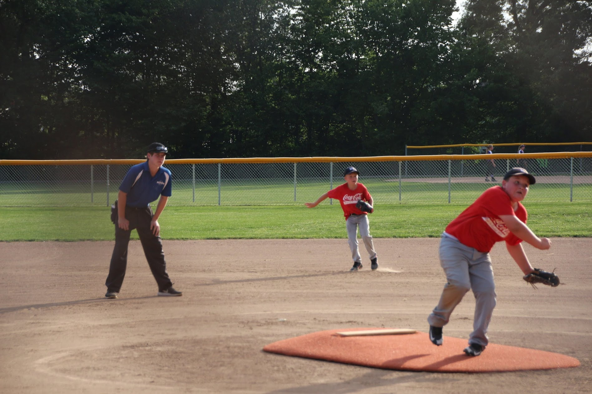
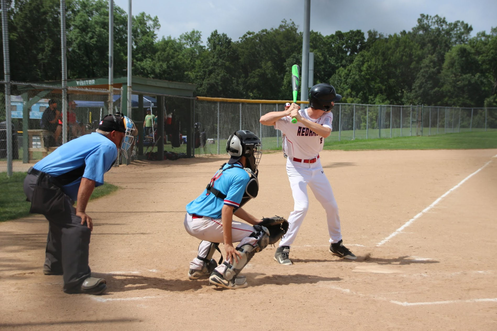

I've played baseball since I was five years old. My main positions are outfield and pitcher. In
highschool, I played JV my Freshman and Sophomore year, and then made varsity my Junior year. On top of spring
LHS baseball, I also play club baseball during the summer and fall. Whenever I'm not playing baseball I'm
umpiring. I umpire for a recreational league, ages 7-14.


This website is still in progress. Let me know how to improve my website.
Contact
Me with comments, recommendations, and pictures.